Segmentation fault
Segmentation fault,段错误,在做内存操作时经常有可能会遇到,比如访问未申请的地址等。
这里有个StackOverflow上对段错误的解释:
A segmentation fault is when your program attempts to access memory it has either not been assigned by the operating system, or is otherwise not allowed to access.
“segmentation” is the concept of each process on your computer having its own distinct virtual*address space. Thus, when Process A reads memory location 0x877, it reads information residing at a *different physical location in RAM than when Process B reads its own 0x877.
All modern operating systems support and use segmentation, and so all can produce a segmentation fault.
To deal with a segmentation fault, fix the code causing it. It is generally indicative of poor programming, especially boundary-condition errors, incorrect pointer manipulation, or invalid assumptions about shared libraries. Sometimes segfaults, like any problem, may be caused by faulty hardware, but this is usually not the case.
signal 11
这两天在VS2019中远程调试代码时,遇到了一个段错误,直接导致编译都通不过
提示的错误信息如下:
1 | error : ld terminated with signal 11 [Segmentation fault] |
不难看出段错误发生在链接中,编译器找不到链接库正确的地址,直接访问了没有申请过的地址导致段错误
远程环境如下图所示:
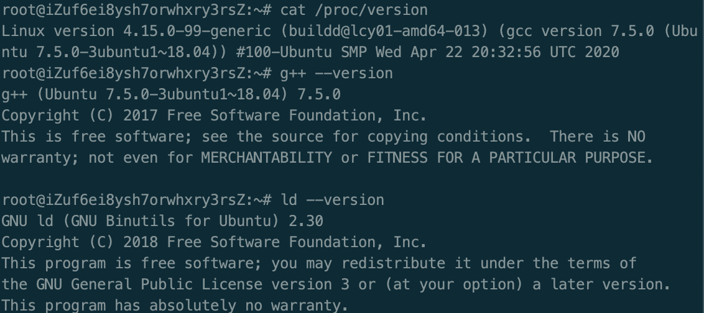
在服务器上通过dmesg指令查看此次遇到的段错误,如下图所示
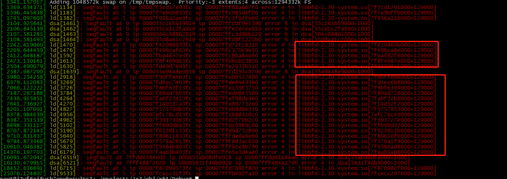
服务器dmesg指令显示的段错误为error4
随手写了个修改未申请地址的段错误
1 |
|
编译之后通过dmesg指令查看段错误,显示为error6
稍微修改代码，把写操作改成读操作来访问未申请地址，显示的段错误为error4
由此可以确定,编译中遇到的段错误Signal 11应该也是访问了未申请的地址导致的
libbfd-2.30-system.so显示异常，libbfd-2.30-system.so明显属于系统带的动态库
不过链接器怎么会访问未申请的地址导致段错误呢?
通过一阵google,在网上找到不少关于signal 11的帖子
其中有提到是硬件问题的(最早排除,远程环境在阿里云上,并没有提示有什么异常的消息),然后也有说把swap内存改大的(试了一下,完全没有用,不适用于我这个问题)
之后在StackOverflow看了个感觉还算靠谱的回答
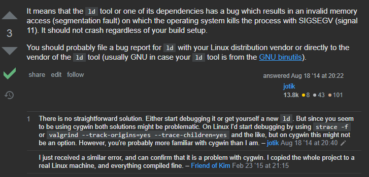
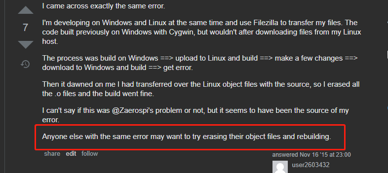
按照这个回答的信息删除服务器响应位置生成的obj文件,重新进行调试,结果如下
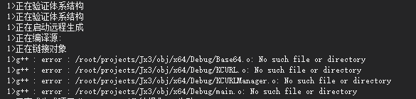
不难看出编译时并没有生成新的obj文件,如果在远程环境下通过g++手动生成obj文件后结果又回到上面的段错误 signal 6
继续Google，看到一下帖子
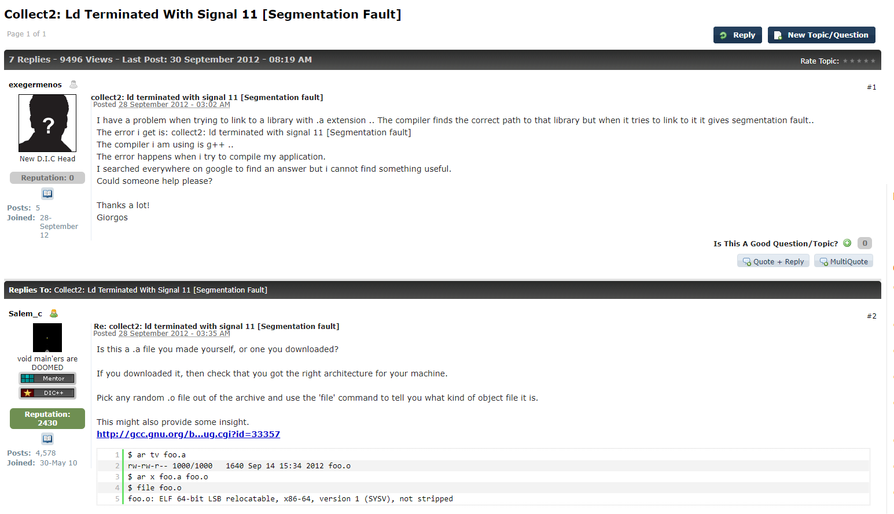
他是链接的静态库有问题,考虑到我这里是ld报段错误,链接错误,并且在Linux下使用的静态库文件后缀为lib，故保留为此错误(emmmmmmmm…….记得好像有个骚操作可以在linux中使用.lib静态库,我傻了)
error 4: (Data) read from an unmapped area.This is your classic wild pointer read. On 64-bit x86, most of the address space is unmapped so even a program that uses a relatively large amount of memory is hopefully going to have most bad pointers go to memory that has no mappings at all.
A faulting address of 0 is a NULL pointer and falls into page zero, the lowest page in memory. The kernel prevents people from mapping page zero, and in general low memory is never mapped, so reads from small faulting addresses should always be error 4s.
error 6: (data) write to an unmapped area.This is your classic write to a wild or corrupted pointer, including to (or through) a null pointer. As with reads, writes to guard pages
mmap()‘d withPROT_NONEwill generally show up as this, not as ‘write to a mapped area that denies permissions’.(As with reads, all writes with small faulting addresses should be error 6s because no one sane allows low memory to be mapped.)
LNK2019、LNK2001
之前由于遇到编译过程中的段错误Signal 11,把之前使用的静态.lib换成linux下静态文件.a,结果编译还是失败,出现了与之前不一样的错误,如图所示
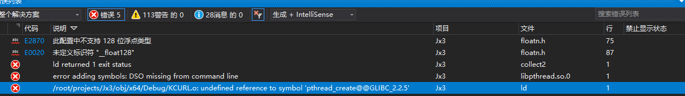
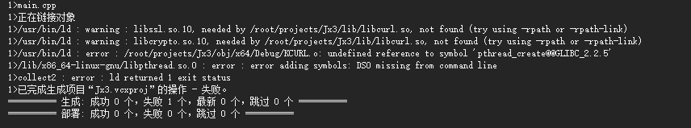
google出来的都说编译的时候要带上-lpthread(我编译的时候带上了还出现这错误,其实原本就带了)
觉得可能是远程环境下apt的库版本不对,无奈下把调试环境换成了windows,编译过程中又遇到连接问题LNK2019、LNK2001
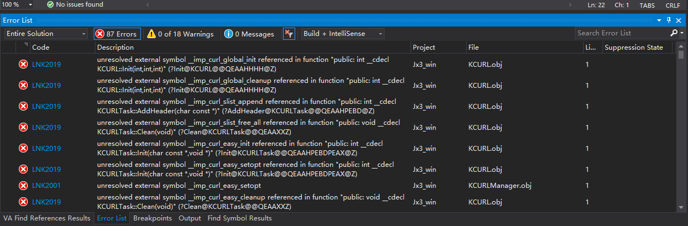
Google无果,Google找到的解决方法不适于我这个问题
尝试自己在windows下编译安装libcurl来使用
在安装教程中发现windows下使用libcurl需要添加依赖库ws2_32.lib;winmm.lib;wldap32.lib(windows网络编程需要导入这几个库，可能是libcurl的作者在宏里面没包含这几个库),并添加预编译宏CURL_STATICLIB(好像是没法找到相应的函数)
加入依赖库与预编译宏以后结果一样，编译依然Lnk2001、2019
最后发现，引入的几个包中，有几个函数功能重复的，导致错误，有几个lib文件集合了另外几个lib
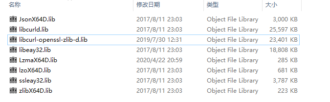
以上是所有的包
其中libcurl-openssl-zlib-d.lib中就包含了libcurld.lib跟ssl
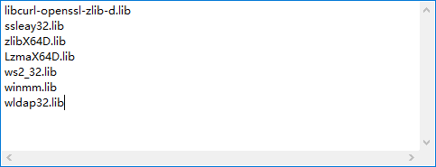
把重复的库删掉就能正常通过编译了,接下来的错误就是代码的问题了
PS：编译成功后，因为某次debug断点太多，导致网络超时…..
PS: Windows环境下在某VS版本下生成的lib文件在低于该版本的VS中也可能会出现link错误,环境函数不兼容